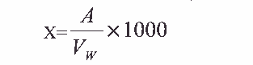
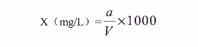

14.总铁离子的测定
甲 邻菲罗啉分光光度法
本方法适用于循环冷却水和天然水中总铁离子的测定，其含量小于 1mg/L。
1．原理
亚铁离子在 pH 值 3～9 的条件下，与邻菲罗啉（1，10-二氮杂菲）反应，生成桔红色络
合离子：
3C12H8N2+Fe2+→[Fe(C12H8N2)3]2+
此络合离子在 pH 值 3～4.5 时最为稳定。
水中三价铁离子用盐酸羟胺还原成亚铁离子，即可测定总铁。
2．试剂
2.1 1+1 盐酸溶液。
2.2 1+1 氨水。
2.3 刚果红试纸。
2.4 10%盐酸羟胺溶液。
2.5 0.12%邻菲罗啉溶液。
2.6 铁标准溶液的配制
称取 0.864g 硫酸铁铵[FeNH4(SO4)2·12H2O]溶于水，加 2.5mL 硫酸，移入 1000mL 容量瓶
中，稀释至刻度。此溶液为 1mL 含 0.1mg 铁标准溶液。
吸取上述铁标准溶液 10mL，移入 100mL 容量瓶中用水稀释至刻度，此溶液为 1mL 含
0.01mg 铁标准溶液。
3．仪器
分光光度计。
4．分析步骤
4.1 标准曲线的绘制
分别吸取 1mL 含 0.01mg 铁标准溶液 0， 1.0， 2.0， 3.0， 4.0， 5.0mL 于 6 只 50mL 容量
瓶中，加水至约 25mL，各加 1 毫米长的刚果红试纸，在试纸呈蓝色时，各瓶加 1mL10%盐
酸羟胺溶液， 2mL0.12%邻菲罗啉溶液，混匀后用 1+1 氨水调节使刚果红试纸呈紫红色，再
加 1 滴 1+1 氨水，使试纸呈红色，用水稀释至刻度。 10 分钟后于 510nm 处，用 3cm 比色皿，
以试剂空白作参比，测其吸光度，以吸光度为纵坐标，铁离子毫克数为横坐标，绘制标准
曲线。
4.2 水样的测定
取水样 50mL 于 150mL 锥形瓶中，放入 1 毫米的刚果红试纸，用 1+1 盐酸溶液调节使
水呈酸性， pH<3，刚果红试纸显蓝色。加热煮沸 10 分钟，冷却后移入 50mL 容量瓶中，加
10%盐酸羟胺溶液 1mL，摇匀， 1 分钟后，再加 0.12%邻菲罗啉溶液 2mL，用 1+1 氨水调节
pH，使刚果红试纸呈紫红色，再加 1 滴氨水，试纸呈红色后用水稀释至刻度。 10 分钟后于
510nm 处，以 3cm 比色皿，以试剂空白作参比，测其吸光度。
5、 分析结果的计算
水样中总铁离子含量 X (毫克/升)，按下式计算：

式中： A——从标准曲线查得的铁离子的含量，毫克；
VW——水样体积，毫升。
6．注释
6.1 循环冷却水中铁含量常以三氧化二铁和氢氧化铁沉淀形式存在，加盐酸煮沸以使
其溶解。
6.2 分析步骤中溶液的 pH 控制也可采用加２mL2mol/L 盐酸，在加邻菲罗啉后，再
加５mL22%醋酸铵溶液，但醋酸铵溶液应不含铁离子，否则，更换试剂时应重新绘制标准
曲线。
7．允许差
水中总铁离子含量小于１mg/L 时，平行测定两结果差不大于 0.03mg/L。
8．结果表示
取平行测定两结果算术平均值，作为水样的总铁离子含量。
乙 火焰原子吸收分光光度法
参见金属离子的测定：火焰原子吸收分光光度法。
丙 磺基水杨酸分光光度法
本方法适用于测定循环冷却水中的铁离子，其含量为 0～3mg/L。
1．方法提要
本方法系在 pH=9～11.5 时，三价铁离子能与磺基水杨酸形成比聚磷酸铁络合物更为稳
定的黄色络离子，从而消除了聚磷酸盐干扰，以分光光度法测定铁离子含量。
2．仪器与试剂
2． 1 仪器
分光光度计： 420nm
2． 2 试剂
2.2.1 磺基水杨酸： 10%水溶液；
2.2.2 氢氧化铵： 1+1 水溶液；
2.2.3 硝酸
2.2.4 盐酸： 1+1 水溶液；
2.2.5 高纯铁丝： 99.9%；
2.2.6 硫酸亚铁铵：优级纯。
3．准备工作
3． 1 铁标准溶液的配制方法：
3.1.1 准确称取高纯铁丝 0.25g 于 250mL 容量瓶中，加热 1+1 盐酸 20mL，加热使
之溶解，冷后移至 250mL 容量瓶中，用水稀释至刻度，此溶液为 1mg/mL 亚铁离子，再吸
取此溶液 1mL 于 100mL 容量瓶中，用蒸馏水稀释至刻度，即亚铁离子为 0.01mg/mL。
3.1.2 或称取 0.7020g 硫酸亚铁铵，溶于 50mL 水中，加 20mL 浓硫酸，转移入 1L
容量瓶中稀释至刻度，此溶液含亚铁离子为 0.1mg/mL，用移液管吸取此溶液 10mL 于 100mL
容量瓶中，用水稀释至刻度，得亚铁离子 0.01mg/mL 溶液。
3． 2 标准曲线绘制
分别吸取 0， 0.5， 1.0， 1.5， 2.0， 3.0， 4.0， 5.0mL 铁标准溶液（ 0.01mg/mL）于 50mL
烧杯中，各加浓硝酸 3 滴，再加水 15mL，加热煮沸约 1 分钟，冷却后转入 50mL 容量瓶中，
加 10%磺基水杨酸 5mL， 1+1 氢氧化铵 5mL，用水稀释至刻度，用试剂空白溶液作对照，
在分光光度计 420nm 波长处， 3cm 比色皿测定吸光度。以吸光度为纵坐标，铁离子含量为
横坐标，绘制标准曲线。
4．试验步骤
吸取 25mL 水样于 50mL 烧杯中，加浓硝酸 6 滴，加热煮沸 10 分钟，其余步骤同上。
5．计算
水样中铁离子含量 X（ mg/L）按下式计算：

式中： a——从标准曲线上查得的毫克数；
V——吸取水样的体积， mL。
6．允许差
6.1 水样中铁离子含量为 0.1～2.4mg/L 时，平行测定两个结果间差数，不应超过 0.04～
0.06mg/L。
6.2 取平行测定两个结果的算术平均值,作为试样铁离子含量。